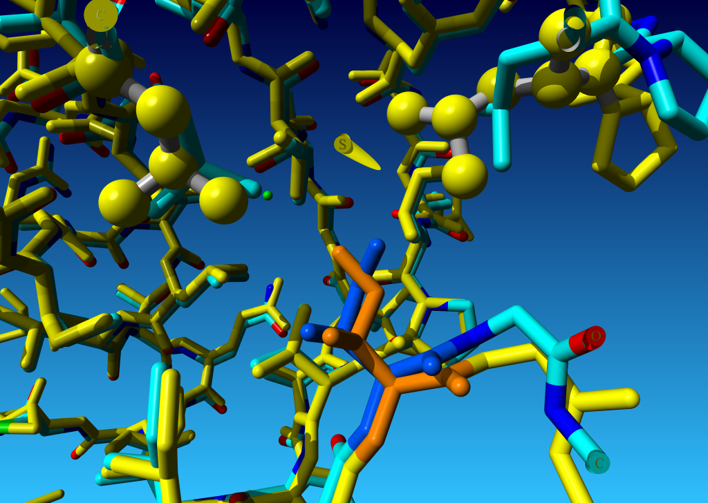

Ile 337 in chain A of the guanine nucleotide dissociation inhibitor α (PDBid=1D5T) is observed in the energetically unfavourable section 1. The pink ball indicates the hypothetical position of the Cδ1 if this isoleucine would have had a rotamer in section 4. However, the Oη of Tyr226 prevents Ile337 from having a χ2 trans rotamer. In addition, the Cγ2 of Val343 prevents Ile 337 from having a χ2 gauche+ rotamer. Therefore, the environment enforces Ile337 to be in an unfavourable rotameric state. Click on the figure to see a movie of the rotating protein.
Ile 15 in chain A (yellow) and B (cyan:C, blue:N, red:O, green:S) of the HIV protease (PDBid=1KZK). Since this protein is a homodimer, both chains can be aligned with each other. Ile 15 in chain B (lighter blue) is observed in the energetically unfavourable section 2, while Ile 15 in chain A (orange) has a rotamer of section 5. Leu33 and Leu38 of chain A are drawn as balls and stick. These leucines are the main reason why Ile 15 in chain B has another rotameric state than Ile 15 in chain A. Click on the figure to see a movie of the rotating protein.
